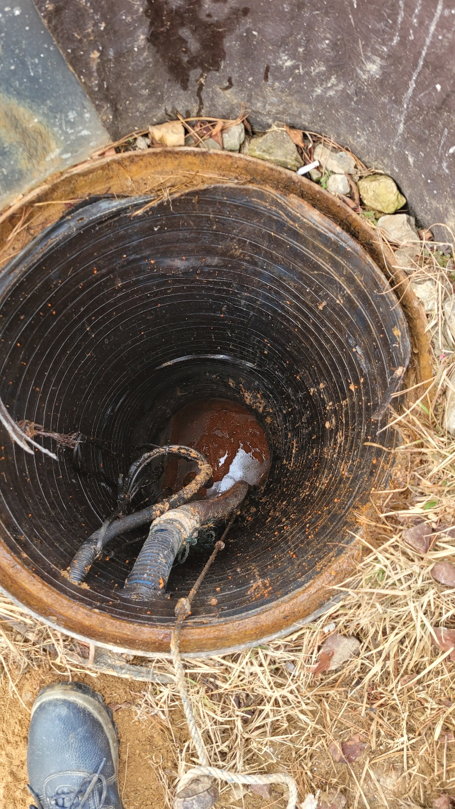
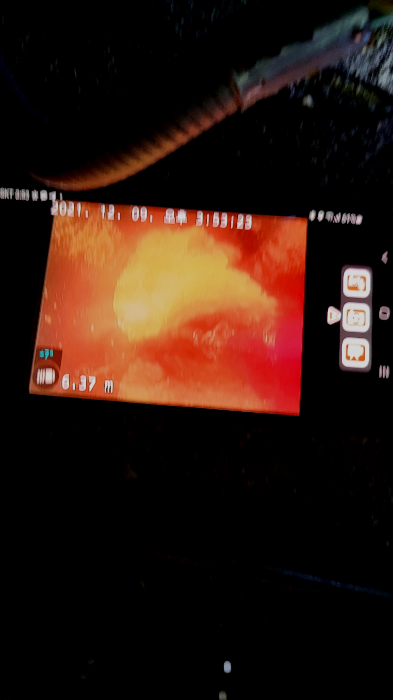
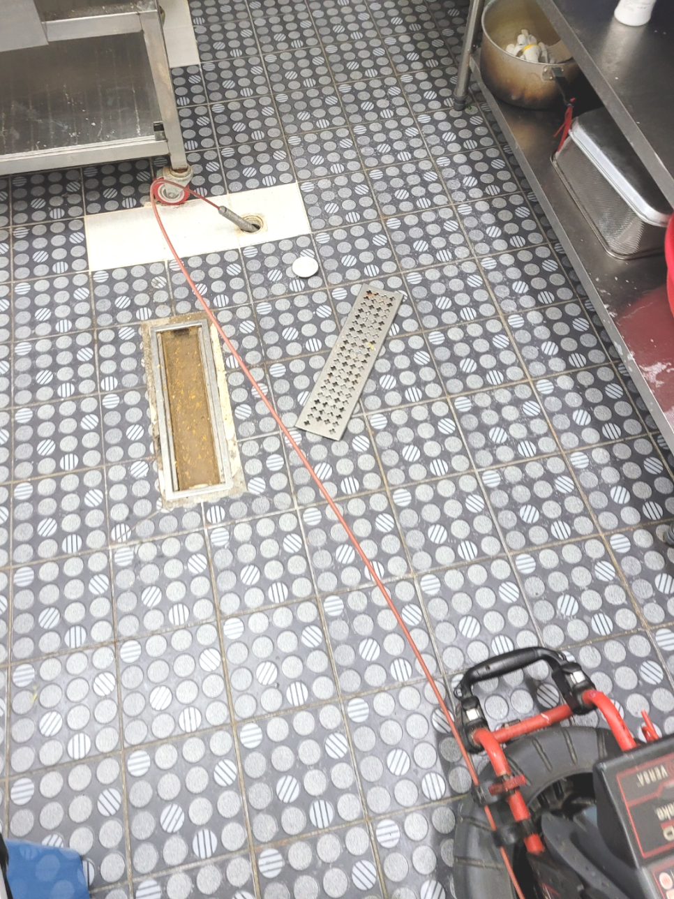
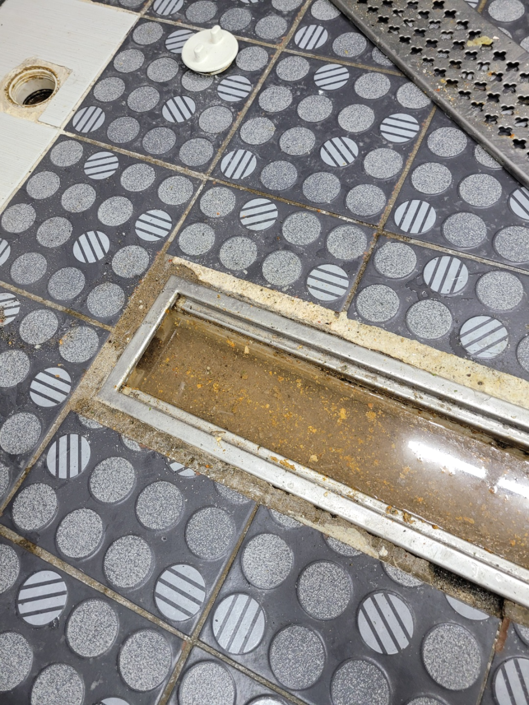
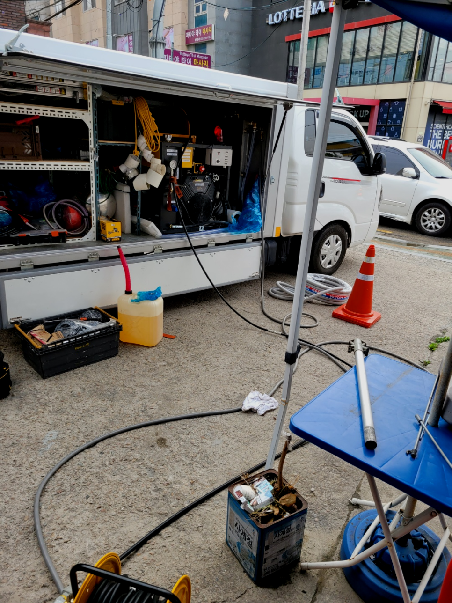
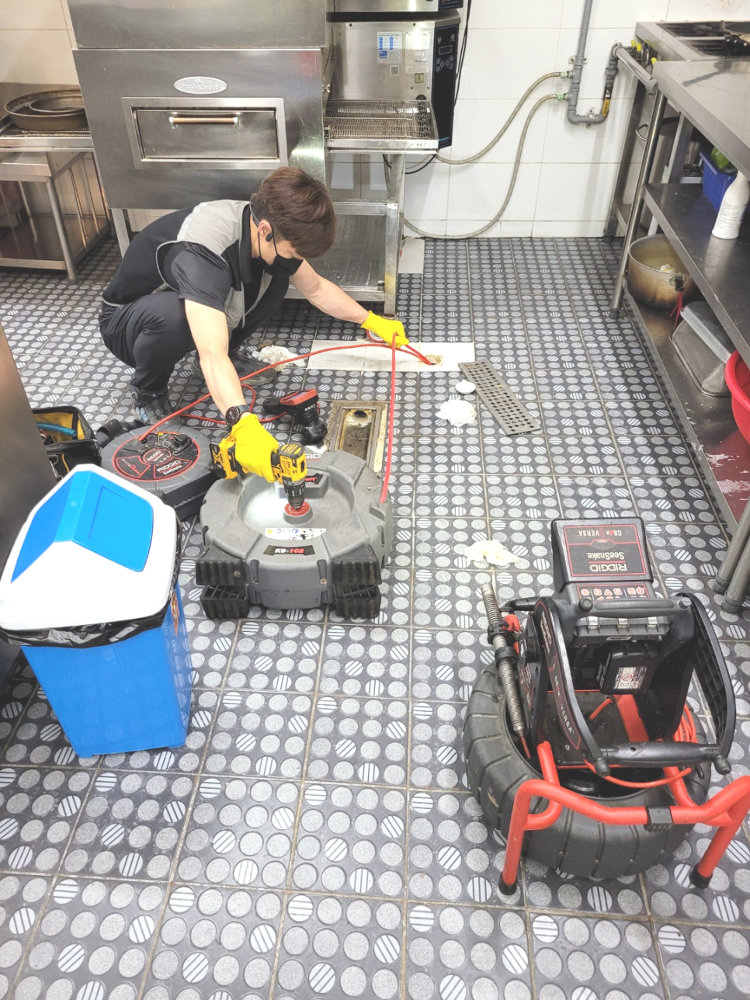

🏠 화성 매송하수구막힘뚫음 비봉 하수구뚫는업체
화성 싱크대막힘 전문 시공 후기

📋 작업 개요
- 위치: 화성
- 서비스 유형: 싱크대막힘, 변기막힘, 하수구막힘, 배관막힘, 역류해결, 뚫는업체, 배관청소, 고압세척, 설비공사
- 작업 일시: 2023. 9. 22. 0:54
- 업체명: 하수구수사대 (010-5615-2118)
🔍 문제 상황
안녕하세요.
설비전문업체 "하수구수사대"를 찾아주셔서 감사합니다.
아무런 이상 없이 썻던 배수구가 배관막힘이 생긴다면 이를 경험한 여러분의 입장에선 상당히 당황스러우실거에요.
저희는 배관막힌 곳이 있으면 어디든지 빠르고 신속하게 방문하여 확실하게 뚫어드리는 하수구 업체로 많은 문의를 받고 해결해 드리고 있습니다. 흔히 하수구가 막히게 되는 것은 일상에서 흔하게 일어나지 않기에 갑작스럽게 퇴수구막히게 되면 많이 당황스러울실 수밖에 없을것입니다.

🔎 원인 분석
💡 전문가 진단: 화성 매송하수구막힘뚫음 비봉 하수구뚫는업체
화성 매송하수구막힘뚫음 비봉 하수구뚫는업체
여러 퇴수구가 물이 안통할 만큼 막혔다면 어떤 장비로 해결을 해야 할까요? 어떤 상태인지에 따라 방법과 장비가 달라지는데요 이물질의 모양이 예상한 것보다 부드럽고 조금 막혀있다면 약품을 여러번 부어서 없애는 방법도 있지만 쉽게 뚫리지 않는 경우도 있습니다.
이번 현장에서는 샤프트 장비로 퇴수구 내부를 스케일링해주는 작업을 하고 석션기로 백시멘트 조각들을 빨아들여서 꺼내면 모든 시공이 마무리되는 과정이었습니다. 백시멘트 이외에도 각종 모래와 분진 등이 많이 있었는데요.
심각하게 막힌 현장은 기본장비로는 소용이 없어서 다른 방법을 진행해야 하는데 이럴때 주로 사용하는 것이 샤프트장비입니다. 배출구 장비는 이물질을 단순히 뚫어내기보단 이물질을 분쇄하는 방식으로 최근에 많이 사용하고 있는 방식입니다.
물을 사용하는데 배출되지 않으면 이용 자체가 어려워지죠. 발견하자마자 뚫어주지 않으면 악취 등의 문제들로 인해 답답해지기만 한데요. 퇴수구 존재 자체를 느끼고 있지는 않지만 항상 우리 주위에 존재하고 있답니다.

🔧 작업 과정
현장 상황에 알맞는 장비를 확인하는 것도 퇴수구막힘을 해결할 수 있는 중요한 역량이라고 할 수 있습니다.고압세척 기기를 싱크대 배관 내부로 투입해서 내부에 쌓인 이물질을 제거해 보았습니다.
보통 셀프로 하는 방법은 배출구 속의 이물질은 그대로 존재하는데 단순히 물이 배수될 정도로만 통수가 된 것이나 비슷해서 근복적인 원인을 제거하기 위해서는 고압세척이 필요로 합니다.
스케일링은 막혀버린것도 해결해주지만 심한냄새도 없애주는데요.괜스레배수관을 수리한다고 만지시면 큰공사까지 할수있어서 배수관에대해 지식이많은 퇴수구배관업체에 연락하는게좋아요
같은사례로 전문기사를 불러야한다면 가지고있는 퇴수구장비가 무엇인지 확인해보시는게좋습니다, 값싼 기계가아니기때문에 전부구비하지않는곳이 꽤많이있습니다
배수구내시경이없다면 어떤곳이막혀있는지 알방법이없기에 아무기계나 넣기만하고 시간만지나고 해결하지못할겁니다. 간간이보면 확실하게뚫는다해서 의뢰했지만 문제도찾지못하고 실패할때도 볼수가있으신데요.
겉으로 보이는 부분에 이물질이 끼어서 일시적으로 막히는 것이 아닐 경우 일반적인 방법으로는 하수 문제를 개선하는 것이 어려울 수 있습니다.
저희 업체는 수시로 고객님들께 출동 건에 대한 후기들을 들려드리고 있으며, 많은 퇴수구막힘 고객님들께서 다시금 찾아주시는 경우도 있고, 확실한 일 처리로 많은 사랑을 받고 있습니다.
구석구석 살펴본 뒤 조치하지 않으면 기름때들은 쌓이기만 하면서 예상치 못한 증상까지도 만드는 것입니다. 이렇기 때문에 작업을 하게 되면 어떤 현장이든지 전체 구간 세척작업하고 있습니다.


✅ 작업 완료
빠른 방문과 해결을 위해 수도권 전지역 어디든 네트웍이 구축되어 있으니 언제든지 연락주시면 완벽하게 해결해 드리겠습니다^^
#하수구막힘 #하수구뚫음 #하수구역류 #씽크대막힘 #싱크대역류 #오수관막힘 #하수구청소 #욕실하수구막힘 #변기막힘 #하수구뚫는비용 #싱크대수리 #화장실막힘




⚠️ 주방 싱크대 배관 막힘 예방 수칙
- ✅ 기름기가 묻은 식기나 프라이팬은 설거지 전 키친타올로 반드시 기름때를 닦아내세요.
- ✅ 주기적으로 싱크대 개수대에 뜨거운 물을 가득 받아 한 번에 내려 배관 내부 기름을 씻어내세요.
- ✅ 배수구 거름망을 미세한 필터로 사용하시고 음식물 찌꺼기가 틈으로 새어 들지 않게 관리하세요.
- ✅ 베이킹소다와 식초를 뜨거운 물과 함께 일주일에 한 번씩 부어주면 배관 살균과 막힘 예방에 좋습니다.
💡 핵심 정리
- 확실한 장비 작업(내시경 점검 및 샤프트 스케일링)으로 원인을 뿌리 뽑습니다.
- 작업 후 1년 이내에 동일한 부위 재발 시 100% 무상 A/S 서비스를 보장합니다.
- 서울 · 경기 · 인천 전 지역에 24시간 언제든 긴급 출동할 수 있도록 항시 대기 중입니다.
❓ 자주 묻는 질문 (FAQ)
🚨 화성 싱크대막힘 문제로 고민이신가요?
정확한 원인 진단과 확실한 시공으로 재발 없는 해결을 약속드립니다.
24시간 긴급 출동 | 서울 · 경기 · 인천 전지역 | 1년 내 재발 시 무상 A/S